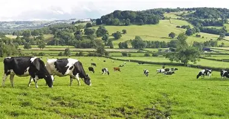
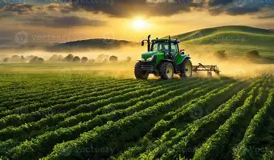
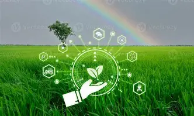

Empowering farmers with modern technology and sustainable practices for a greener tomorrow.
Join a community of over 50,000 farmers utilizing our data-driven insights to maximize yield and minimize environmental impact. We provide everything from satellite crop monitoring to automated irrigation systems.

We are a leading agricultural technology company dedicated to transforming traditional farming. Our mission is to promote sustainable farming practices, increase crop yield, and empower the agricultural community with modern tools.
By integrating cutting-edge IoT sensors, AI-driven analytics, and eco-friendly practices, we ensure that every drop of water and every seed is utilized efficiently, reducing waste and maximizing productivity.
Advanced tracking and analytics for better yield optimization.
Automated water management systems to save resources.
Access high-end farming machinery at affordable rates.
Comprehensive soil testing and fertility management.
Personalized expert advice to boost farm productivity and sustainability.
Integrated logistics and distribution solutions for farm produce.

About: A widely cultivated cereal grain, essential for global food security. Our premium wheat is grown using sustainable practices.
Benefit: Rich in carbohydrates, fiber, and essential nutrients. Promotes healthy digestion and provides long-lasting energy.

About: High-yield organic corn cultivated without synthetic pesticides. A versatile crop used for food, feed, and fuel.
Benefit: Excellent source of antioxidants, vitamins, and minerals. Supports eye health and provides essential dietary fiber.

About: A globally significant legume packed with plant-based protein. Grown utilizing advanced precision farming techniques.
Benefit: High in protein, heart-healthy fats, and essential amino acids. Supports muscle growth and overall cardiovascular health.

About: A primary staple food for over half the world's population, grown in flooded paddies with efficient water management.
Benefit: A great source of complex carbohydrates and B vitamins, providing sustained energy and supporting nervous system health.

About: A soft, fluffy staple fiber that grows in a boll around the seeds, essential for the global textile industry.
Benefit: A breathable and durable natural fiber used in eco-friendly clothing, reducing reliance on synthetic materials.

About: A bright yellow flower cultivated for its edible seeds and versatile oil, often used in crop rotation strategies.
Benefit: Sunflower seeds and oil are rich in Vitamin E and healthy fats, promoting skin health and reducing inflammation.
Sunny, Humidity: 45%
Perfect day for harvesting!
Our smart farming process from sensor installation to yield improvement.

Committed to 100% sustainable agricultural practices. We prioritize long-term soil health and biodiversity over short-term gains, ensuring your land remains fertile for generations.
24/7 dedicated assistance from our agronomists. Our team of seasoned professionals is always on standby to help you troubleshoot issues or optimize your farming strategy.
Utilizing IoT, Drones, and AI for smart farming. From satellite imagery to automated drone spraying, we equip you with the most advanced tools available on the market.
"Since partnering with them, our crop yield has increased by 40% and water usage dropped significantly."
Read about how our latest drone surveillance is helping farmers detect crop diseases early. Read More...
Smart Farming represents the application of modern Information and Communication Technologies (ICT) into agriculture. It includes IoT sensors, automated drone spraying, and real-time AI weather forecast analysis to optimize crop yields.
Our custom hardware devices transmit data using low-power wide-area networks (LPWAN) like LoRaWAN, cellular IoT connectivity, or local Wi-Fi links, meaning you get secure connectivity even in remote regions.
Absolutely! Our analytical recommendations align completely with organic agricultural practices. The sensors do not alter the soil composition and aid organic farmers in maintaining soil microbiome health.

Schedule a call with one of our professional agricultural consultants to receive a customized automation assessment for your fields today.